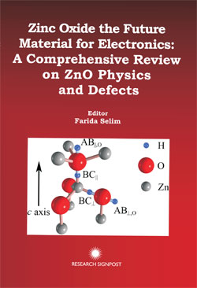
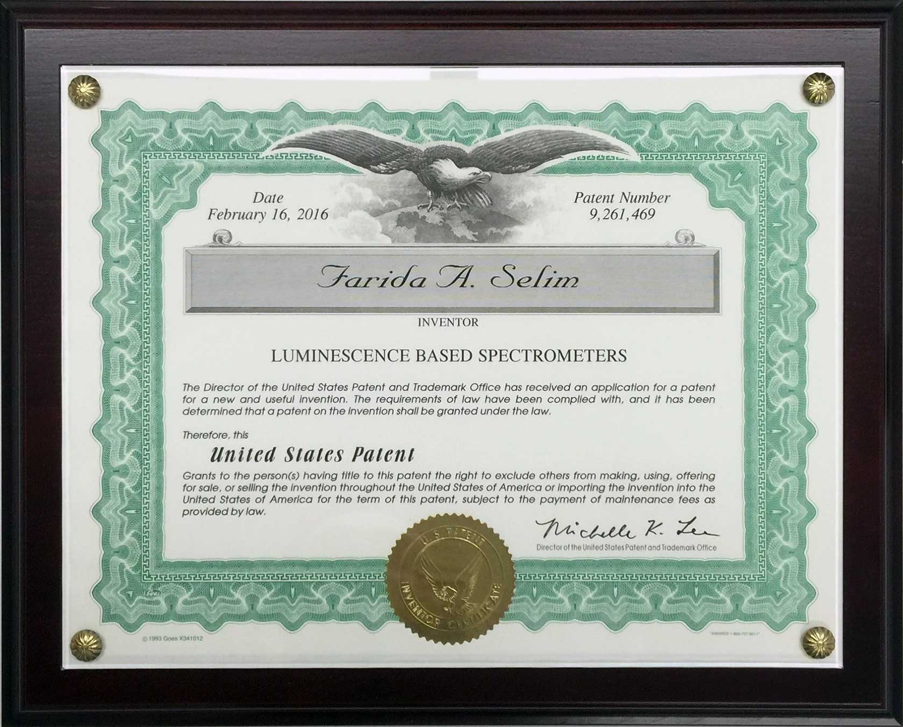

41 peer reviewed articles were published at BGSU (Aug 2013 - 2016).
More than 90 peer reviewed articles total.
Featured Articles
- Jianfeng Ji, A. M. Colosimo W. Anwand, L.A. Boatner, A. Wagner, P.S. Stepanov, T.T. Trinh, M.O. Liedke, R. Krause-Rehberg, T.E. Cowan, F.A. Selim, ZnO Luminescence and scintillation studied via photoexcitation, X-ray excitation, and gamma-induced positron spectroscopy, Nature Sci. Rep. 6, 31238, 2016.
- D. Winarski, C. Persson, and F. A. Selim, Hydrogen in insulating oxide Y3Al5O12 strongly narrows the band gap, Applied Physics Letters 105, P. 221110-1—221110-4, 2014.
- Jianfeng Ji, L. A. Boatner, and F. A. Selim, Donors characterization in ZnO by thermally stimulated luminescence, Applied Physics Letters 105, 041102-1—041105, 2014.
- M.C. Taurn, F. A. Selim and M. D. McCluskey, Persistent photoconductivity in strontium titanate, Physical Review Letters 111, 187403, 2013.
- F. A. Selim, C.R. Varney, M. C. Taurn, M.C. Rowe, G. S. Collins, and M. D. McClusky, “Positron-lifetime measurements of hydrogen passivation of cation vacancies in yttrium-aluminum oxide garnets”, Physical Review B 88, 174102, 2013.
- F. A. Selim, M. C. Taurn, D. P. Wall, L. A. Boatner and M. D. McCluskey, Cu doping of ZnO by nuclear transmutation, Applied Physics Letters 99, 202109, 2011.
- G. S. Collins, X. Jiang, J. P. Bevington, F. A. Selim, and M. Zacate, Dependence of diffusion mechanism on indium composition in lanthanide indides having L12structure, Physical Review Letters 102, 155901 2009.
- F. A. Selim, M. H. Weber, D. Solodovnikov, and K. G. Lynn, “Nature of Native Defects in ZnO”, Physical Review Letters 99, 085502, 2007.
Books

Zinc Oxide, The Future Material for Electronics, A Comprehensive Review on ZnO Physics and Defects
Editor: Farida Selim, ISBN: 978-81-308-0392, Research Signpost 2012.
Book Chapter: F. A. Selim, Formation and role of intrinsic defects in ZnO, in: ZnO the future material of electronics, Research Signpost, 2012.
Peer Review Articles (updated Feb 2018)
2017
- B. Wang, P Saadatkia, and F. A. Selim, and D. C. Look, Study of Trapping Phenomena in SrTiO3 by Thermally Stimulated Techniques. Journal of Electronic Materials 47, 604, 2018.
- D. J. Winarski, E. Heckman, E. Flesburg, M. Haseman, R. S. Aga, and F. A. Selim, Photoconductive ZnO Films Printed on Flexible Substrates by Inkjet and Aerosol Jet Techniques, Journal of Electronic Materials 47, 949, 2018.
- P. Saadaktia, P. Stepanov, and F. A. Selim, Photoconductivity of bulk SrTiO3 single crystal at room temperature, Materials Research Express 5 (1), 2018.
- M. S. Haseman, P. Saadaktia, J. T. Warfield, J. Lawrence, A. Harnandez, G. E. Jellison, L.A. Boatner, and F. A. Selim, Optical and electrical properties of Sn-doped ZnO single crystals, Journal of Electronic Materials 47, 1497, 2018.
- S. Agarwal, M. S. Haseman, K. D. Leedy, D. J. Winarski, P. Saadatkia, E. Doyle, L. Zhang V. S. Vasilyev, and F. A. Selim, Tuning the phase and microstructural properties of TiO2 films through pulsed laser deposition and exploring their role as buffer layers for conductive films, Journal of Electronic Materials, DOI: s11664-017-6043-2, 2018.
- L. Zhang, T. Zhou, F. A. Selim, and H. Chen, Single CaO accelerated densification and microstructure control of highly transparent YAG ceramic, Journal of the Americn Ceramic Society, 101, 703, 2018.
- T. Zhou, L. Zhang, S. Wei, L. Wang, H. Yang, Z. Fu, H. Chen, F. A. Selim, and Q. Zhang, MgO assisted densification of highly transparent YAG ceramics and their microstructural evolution, Journal of the European Ceramic Society, 38 (2), 687, 2018.
- F. A. Selim, Gamma Induced Positron Annihilation: History, Current, and Future Developments, Acta Physica Polonica A 132, 1450, 2017.
- J. Grames, Y. Furletova, J. Guo, F. Lin, V. Morozov, Y. Zhang, and F. A. Selim, E. Voutier, PEPPo: Highly Polarized Positrons using MeV Energy Polarized Electrons, Proceedings of the 22nd International Spin Symposium, Accepted Sept. 2017.
- S. Agarwal, M. Haseman, M. A. Khamehchi, P. Saadatkia, D. J. Winarski, and F. A. Selim, Physical and optical properties of Ce:YAG nanophosphors and transparent ceramics and observation of novel luminescence phenomenon, Optical Materials Express 7 (3), 1055, 2017.
- P. Stepanov, S. Stepanov, V.M. Byakov, and F. A. Selim, Developing new routine for processing two-dimensional coincidence Doppler energy spectra and evaluation of electron subsystem properties in metals, Acta Physica Polonica A, 132 (5), 1628, 2017.
- L. Zhang, Z. Li, F. Zhen, L. Wang, Q. Zhang, R. Sun, F. A. Selim, C. Wong, and H. Chen, High sinterability nano-Y2O3 powders prepared via decomposition of hydroxyl-carbonate precursors for transparent ceramics, Journal of Materials Science 52, 8556, 2017.
- S. Wei, L. Zhang, Y. Ben, T. Zhou, Z. Li, H. Yang, F. A. Selim, C. Wong, and H. Chen, High dispersibility of α-Al2O3 powders from coprecipitation method by step-by-step horizontal ball-milling, Journal of Materials Science: Materials in Electronics 28, 16254, 2017.
- T. Zhou, L. Zhang, F. A. Selim, R. Sun, C. Wong, H. Chen, and Q. Zhang, Annealing induced discoloration of transparent YAG ceramics using divalent additives in solid-state reaction sintering, Journal of the European Ceramic Society 37, 4123, 2017.
- Y. Ben, S. Wei, T. Zhou, Z. Li, H. Yang, Y. Wang, F. A. Selim, C. Wong, and H. Chen, PVB modified spherical granules of -TCP by spray drying for 3D ceramic printing, Journal of Alloys and compounds 721, 312, 2017.
- J. Čížek, M. Vlček, P. Hruška, F. Lukáč, O. Melikhova, W. Anwand, F. A. Selim, Ch. Hugenschmidt, and W. Egger, Point defects in ZnO crystals grown by various techniques, Journal of Physics: Conference Series. 791 (1), 012017 IOP Publishing, 2017.
2016
- F. A. Selim, A. Khamehchi, D. Winarski, and S. Agarwal, Synthesis and characterization of Ce:YAG nanophosphors, Optical Materials Express 6 (12) 3692-3765, 2016.
- P. Saadatkia, G. Ariyawansa, K. D. Leedy, D. C. Look, L.A. Boatner, and F. A. Selim, Fourier-transform infrared spectroscopy measurements of multi-phonon and free-carrier absorption in ZnO, Journal of Electronic Materials, 45(12), 6329-6336, 2016.
- M. Haseman, P. Saadatkia, D.J. Winarski, F. A. Selim, K.D. Leedy, S. Tetlak, and D.C. Look, W. Anwand, A. Wagner, Effects of Substrate and Post-Growth Treatments on the Microstructure and Properties of ZnO Thin Films Prepared by Atomic Layer Deposition, Journal of Electronic Materials, 45(12), 6337-6345, 2016.
- Pooneh Saadatkia, Chris Varney and Farida Selim*, Trap level measurements in wide band gap materials by thermoluminescence, Book chapter in “Luminescence - An Outlook on the Phenomena and their Applications” (ISBN 978-953-51-4864-7), 2016.
- J. Čížek, M. Vlček, P. Hruška, F. Lukáč, O. Melikhova, W. Anwand, F. A. Selim, Ch. Hugenschmidt, and W. Egger, Characterization of point defects in ZnO crystals, Accepted for publication in JPCS, 2016.
- D. J. Winarski, W. Anwand, A. Wagner, P. Saadatkia, F. A. Selim*, M. Allen, B. Wenner, K. Leedy, J. Allen, S. Tetlak and D. C. Look, Induced conductivity in sol-gel ZnO films by passivation or elimination of Zn vacancies, AIP Advances 6, 095004, 2016.
- Jianfeng Ji · A. M. Colosimo W. Anwand, L.A. Boatner, A. Wagner, P.S. Stepanov, T.T. Trinh, M.O. Liedke, R. Krause-Rehberg, T.E. Cowan, F.A. Selim, ZnO Luminescence and scintillation studied via photoexcitation, X-ray excitation, and gamma-induced positron spectroscopy, Sci. Rep. 6, 31238, 2016.
- Junming Luo, Sunil Sahi, Michael Groza, Zhiqiang Wang, Lun M Wei Chen, Arnold Burger, Rasool Kenarangui, Tsun-Kong Sham, Farida A. Selim, Luminescence and scintillation properties of BaF2Ce transparent ceramic, Optical Materials 58, 353, 2016.
- F. A. Selim, Luminescence based spectrometers, US patent 9,261,469, Feb. 16, 2016
- M. Colosimo, J. Ji, P. S. Stepanov, L. A. Boatner, an F. A. Selim, Scintillation of Un-doped ZnO Single Crystals, MRS Advances1, 121, 2016.
- C. R. Varney and F. A. Selim, Color Centers in YAG, AIMS Materials Science, 2(4): 560-572, 2016.
- M.S. Holston, I.P. Ferguson, N.C. Giles, J.W. McClory, D.J. Winarski, Jianfeng Ji, F.A. Selim, L.E. Halliburton, Green luminescence from Cu-diffused LiGaO2 crystals, Journal of Luminescence 170, 17–23, February 2016.
- P. Husband, I. Bartosova, V. Slugen, and F. A. Selim, Positron annihilation in transparent ceramics, JPCS 674, 012013, 2016.
- I. Bartošová, A Bouhaddane, M Dománková, V Slugeň, D Wall, and F A Selim, Study of radiation damage in ODS steels by positron annihilation spectroscopy, JPCS 674, 012011 (2016).
2015 and older
- F. A. Selim, Nanotechnology and the Future of Science, J Nanotech Mater Sci 2(1): 1, 2015.
- F. A. Selim, D. Winarski, C. Varney. M. C. Taurn, Jianfeng Ji, and M. D. McCluskey, Generation and characterization of point defects in SrTiO3 and Y3Al5O12, Results in Physics 5, 28-31, Elsevier Open Access, 2015.
- I. Bartošová, M Dománková, F. A. Selim and V Slugeň, Investigation of microstructural changes of ODS steel EP450 after Helium implantation, JPCS 618, 012014. 2015.
- D. Winarski, C. Persson, and F. A. Selim, Hydrogen in insulating oxide Y3Al5O12 strongly narrows the band gap, Applied Physics Letters 105, P. 221110-1 -221110-4, 2014.
- Jianfeng Ji, L. A. Boatner, and F. A. Selim, Donors characterization in ZnO by thermally stimulated luminescence, Applied Physics Letters 105, 041102-1: 041105, 2014.
- Iveta Bartosova, V. Slugen, D. Wall, and F. A. Selim, Theoretical and experimental characterization of ODS steel, Procedings of the 20 th International Conference on Applied Physics and Condensed Matter, Volume 20, 141-145, 2014.
- S. Dwan, C. Varney, G. V. Barbosa-Cánovas , J. Tang, F. A. Selim, S. S. Sablani, “The impact of microwave-assisted thermal sterilization on the morphology, free volume, and gas barrier properties of multilayer polymeric films”, Journal of Applied Polymer Science 131, 12, 2014.
- C. R. Varney and F. A. Selim, Positron lifetime measurements of vacancy defects in complex oxides, Acta Physica Polonica A 125, 764-766, 2014.
- S. Dhawan, C. Varney, G. V. Barbosa-Cánovas , J. Tang, F. A. Selim, S. S. Sablani, Pressure-assisted thermal sterilization effects on gas barrier, morphological, and free volume properties of multilayer EVOH films, Journal of Food Engineering 128, 40, 2014.
- F. A. Selim, C.R. Varney, M. C. Taurn, M.C. Rowe, G. S. Collins, and M. D. McClusky, “Positron-lifetime measurements of hydrogen passivation of cation vacancies in yttrium-aluminum oxide garnets”, Physical Review B 88, 174102, November 2013.
- M.C. Taurn, F. A. Selim and M. D. McCluskey, Persistent photoconductivity in strontium titanate, Physical Review Letters 111, 187403, November 2013.
- F. A. Selim, M. C. Tarun, D. E. Wall, L. A. Boatner and M. D. McCluskey, Erratum: “Cu-Doping of ZnO by nuclear transmutation” Appl. Phys. Lett. 101, 029901, 2012.
- C. R. Varney, M. A. Khamehchi, Jianfeng Ji, and F. A. Selim, “X-ray luminescence based spectrometer for investigation of scintillation properties”, Review of Scientific Instruments 83, 103112 (1-3), 2012.
- D. T. Mackay, C. R. Varney, J. Buscher, and F. A. Selim, “Study of exiton dynamics in garnets by low temperature Thermo-luminescence”, Journal of Applied Physics 112, 023522, 2012.
- C. R. Varney, D. T. Mackay, A. Pratt, S. M. Reda, and F. A. Selim, “Energy levels of exciton traps in yag single crystals”, Journal of Applied Physics 111, 063505, 2012.
- C. R. Varney, D. T. Mackay, S. M. Reda and F. A. Selim, “On the optical properties of undoped and rare-earth-doped yttrium aluminum garnet single crystals”, J. Physics D: Applied Physics 45, 015103, 2012.
- S. M. Reda, C. R. Varney, and F. A. Selim, “Radio-luminescence and absence of trapping defects in Nd-doped YAG single crystals”, Results in Physics 2, 123, Elsevier 2012
- F. A. Selim, M. C. Taurn, D. P. Wall, L. A. Boatner and M. D. McCluskey, Cu doping of ZnO by nuclear transmutation, , Applied Physics Letters 99, 202109, 2011.
- C. R. Varney, S. M. Reda, D. T. Mackay, M. C. Rowe, and F. A. Selim, Strong visible and near infrared luminescence in undoped yag single crystals, AIP Advances 1, 042170, 2011.
- G. S. Collins, X. Jiang, J. P. Bevington, F. A. Selim, and M. Zacate, Dependence of diffusion mechanism on indium composition in lanthanide indides having L12structure, Physical Review Letters 102, 155901 2009.
- F. A. Selim, J. P. Bevington and G. S. Collins, “Diffusion of 111Cd probes in Ga7Pt3 studied via nuclear quadruple relaxation”, Hyperfine Interactions 178, 87, 2008.
- M. H. Weber, F. A. Selim, D. Solodovnikov, and K. G. Lynn, Defect Engineering of ZnO, Applied Surface Science 255, 68, 2008.
- P. Bevington, F. A. Selim, and G. S. Collins, “Site preferences of indium impurity Atoms in intermetallics having Al3Ti or Al3Zr crystal structures, Hyperfine Interaction 177, 15, 2008.
- F. A. Selim, M. H. Weber, D. Solodovnikov, and K. G. Lynn, “Nature of Native Defects in ZnO”, Physical Review Letters 99, 085502, 2007.
- F. A. Selim, D. Solodovnikov, M. H. Weber, and K. G. Lynn, “Identification of defects in Y3Al5O12 crystals by positron annihilation spectroscopy”, Applied Physics Letters 91, 104105, 2007.
- M. A. Okuniewski, D. P. Wells, F. A. Selim et al., “Positron annihilation spectroscopy of proton irradiated single crystal BCC iron”, Journal of Nuclear Materials 351,149, 2006.
- D. P.Wells A. W. Hunt, L. Tchelidze, J. Kumar, K. Smith, S. Thompson, F. A. Selim, J. Williams, J. F. Harmon, S. Maloy, and A. Roy, “Gamma-induced positron annihilation spectroscopy and application to radiation-damaged alloys”, Nuclear Instruments and Methods in Physics Research A 562, p. 688, 2006.
- F. A. Selim, D.P. Wells, J. Harmon and J. R. Williams, “High depth non-destructive stress measurements on thick steel alloys” Journal of Applied Physics, 97, 113540, 2005.
- F. A. Selim, “Nanosecond Time Scale Measurements of Electron States during Laser Excitation”, Physics Letters A 344, p. 291, 2005.
- F. A. Selim, D. P. Wells and J. F. Harmon, “Positron Lifetime Measurements by Proton Capture”, Review of Scientific Instruments 76, 033905, 2005.
- F. A. Selim, D.P. Wells, J. Harmon and J. Williams, “Development of Accelerator Based - rays Induced Positron Annihilation Spectroscopy Technique”, Journal of Applied Physics 97, 113539, 2005.
- F. A. Selim, J. Williams, D. P. Wells and J. F. Harmon, “Investigation of Shock Wave Effects on Positron Annihilation in Copper and Tungsten”, Nuclear Instruments & Methods in Physics Research B (NIMB) 241, 253, 2005.
- A. K. Roy et A. Venkatesh, S. Dronavalli, V. Marthandam, D. Wells, F. A. Selim, and R. Roggeal., “Residual Stress Measurements in Welded and Plastically Deformed Target Structural Materials,” Journal of ASTM International 2, 1, 2005.
- F. A. Selim, D.P. Wells, J. Harmon and J. Williams, “Development of a new positron lifetime spectroscopy technique for defect characterization in thick materials, “Advances in X-ray Analysis 47, p. 59, 2004.
- F. A. Selim, D.P. Wells, J. F. Harmon, J. Kwofie, G. Lancaster and J. L. Jones, “Measurements of Dynamic Structural Changes in Laser-Shocked Materials by Positron Annihilation”, Proc. of Shock Compression of Condensed Matter, p. 1199, 2004.
- F. A. Selim, D. P. Wells, J. F. Harmon, J. Kwofie, A. K. Roy, “Applications of electron Linacs in defect and stress measurements”, Proc. of ANS in Accelerators Applications in Nuclear Renaissance, p. 900, 2004.
- F. A. Selim, D.P. Wells, J. F. Harmon, J. Kwofie, G. Erickson, and T. Roney, “New positron annihilation spectroscopy techniques for thick materials” Journal of Radiation Physics and Chemistry 68, p. 427, Oct. 2003.
- F. A. Selim, D.P. Wells, J. F. Harmon, J. Kwofie, G. Lancaster and J. L. Jones, “Bremsstrahlung Based Positron Annihilation Spectroscopy for Material Defect Analysis”, AIP proceedings 680, p. 499, 2003, Invited.
- F. A. Selim, D.P. Wells, J. F. Harmon, J. Kwofie, A. K. Roy, T. White and T. Roney, “Stress analysis using bremsstrahlung radiation” Advances in X-ray analysis, 46, p. 106, 2003.
- J. Kwofie, D.P. Wells, F.A. Selim, F. Harmon, S.P. Duttagupta, J.L. Jones, T. White, T. Roney, “Bremsstrahlung-based imaging”, AIP Proc. 680, 943, 2003.
- Y. Makarashvili, D. P. Wells, F. A. Selim, J. Kwofie, T. , Roney T, T. Ericson, “Nuclear isomer production for hazardous and mixed waste assay,” Health Physics 84, S249, 2003.
- F. A. Selim et al., “Bremsstrahlung-induced highly penetrating probes for non destructive assay and defect analysis”, Nuclear Instruments & Methods in Phys. Research A (NIMA) 495, 154, 2002.
- F. A. Selim et al., “Doppler Broadening Measurements of Positron Annihilation Using Bremsstrahlung Radiation”, Nuclear Instruments & Methods in Phys. Research B (NIMB) 192, 197, 2002.
- D.P. Wells., F. A. Selim, J. F. Harmon, et al., “Development of Accelerator–Based X- ray Fluorescence for Large Sample Assay”, Advances in X-Ray Analysis 45, 447, 2002.
- J. Kwofie, D.P.Wells, F.A. Selim, f. Harmon, , J. Jones, J. Duttagupta, , Small, portable linear accelerators as a waste management tool, Health Physics 82, S115, 2002.
- F.A. Selim, “Positron Dechanneling by Electronic and Nuclear Scattering”, Material Science Forum 363, p. 487, 2001.
- F. A. Selim, A.W. Hunt, R.H. Howell, K. G. Lynn, J. A. Golovchenko, “Developments on Positron Scattering Experiments Including Beam Production and Detection”, Material Science Forum. 363, 614, 2001.
- D. P. Wells, J. Kwofie, F. A. Selim, J. F. Harmon, and W. Scates , “Accelerato Based X-Ray Fluorescence (AXRF) for Waste Assays and Environmental Applications”, Health Physics 80, S114, 2001.
- F. A. Selim, A.W. Hunt, J. A. Golovchenko, R.H. Howell, R. Haakenaasen, K. G. Lynn, “Improved Source and Transport of Monenergetic MeV Positrons”, Nucl. Inst. & Meth B (NIMB) 171, p. 182, 2000.
- F. A. Selim, A.W. Hunt, , R.H. Howell, K. G. Lynn, J. A. Golovchenko, “Multiple Scattering Measurements of Energetic Positrons in a thin gold polycrystal”, Nucl. Inst. & Meth. B (NIMB) 168, p. 1, 2000.
- A. W. Hunt, D.B.Cassidy, F.A. Selim, R. Haakenaasen, T.E. Cowan, R.H. Howell, K.G.Lynn, J. A. Golovchenko, “In-flight annihilation during positron channeling”, Nuclear Instruments and Methods in Physics Research B 164, 44, 2000.
- A.W. Hunt, D. B. Cassidy, F.A. Selim, R. Haakenaasen, T.E. Cowan, R.H. Howell, K. G. Lynn, J. A. Golovchenko, Spatial sampling of crystal electrons by in -light annihilation of fast positrons, Nature 402, p. 157, 1999.
- F.A. Selim, J.A. Golovchenko, M. Mandour, R. Howell and M.S. Abouel-Wafa, “Calculations of Multiple Scattering of Fast Positrons and Electrons, Mat. Sc. Forum. 255-257 (1998), p. 266.
- R. Haakenaasen, A.W. Hunt, J.A. Golovchenko, R. Howell, F.A. Selim, K. G. Lynn, T. Cowan, L.V. Hau, “Single quantum and two quantum annihilation in flight measurements of electron distributions using channeled positrons”, Mat. Sci. Forum. 255, p. 257, 1998.
- M. A. Okuniewski, C. S. Deo, M. H. Weber, F. A. Selim, K. G. Lynn et al., “Particle Beam-Induced Radiation Effects in Materials”, Proceedings of the TMS 2008 Annual Meeting 2008.
- M. A. Okuniewski, M. H. Weber, F. A. Selim, K. G. Lynn, C. S. Deo, S. G. Srivilliputhur, M. R. James, S. A. Maloy, M. I. Baskes, and J. F. Stubbins“, Helium and hydrogen effects in irradiated single crystal body-center cubic Iron”, ICPA-14, 2006.
- F. A. Selim, D.P. Wells, J. Harmon and J. Williams, “A Novel Application of Pulsed X-ray in Laser Matter Interaction”, Proc. of Denver X-ray Conference, Powder diffraction 19, 203, 2004.
- D. P. Wells, F. A. Selim, J. F. Harmon, , G. Erickson, J. Jones, T. White and T. Roney “Applications and technological spin-offs of electron Linacs to Environmental sciences”. Proc. of Subsurface Science Symposium , Salt Lake, Oct, 2003.
- F. A. Selim, D. P. Wells, J. F. Harmon, J. Kwofie, T. White, T. Roney, G. Erickson, “ Applications of Nuclear Isomers in Subsurface Science”, Proc. of Subsurface Science Symposium, ID, 2002.
- F. A. Selim, D. P. Wells, J. F. Harmon, W. Scates, J. Kwofie, R. Spaulding, S.P. Duttagupta, J.L. Jones, T. White, and T. Roney, “ Development of bremsstrahlung based probe for nondestructive assay”, Proc. of Subsurface Science Symposium , ID, 2001
- J. Kwofie, D.P.Wells, F.A. Selim, F. Harmon, S.P. Duttagupta, J.L. Jones, T. White, T. Roney, “ Small portable electron Linear accelerators as in-field and a waste management tool”, Proc. of Subsurface Science Symposium, 16 Oct., Boise, ID, 2002
- Kwofie, J., D.P. Wells, F. A. Selim, F. J. Harmon, W. Scates, R. Spaulding, G.Erickson, S.A. Parke, S.P. Duttagupta, J.L. Jones, T. White and T. Roney, Accelerator-Based XRF for Subsurface Science, 1st Inland Northwest Research Alliance Conference on Sub-surface Science, Aug. 2001.
- D. P. Wells, W .W. Scates, J. F. Harmon, R. Spaulding, F. A. Selim, A Test of the Exponential Decay Law by Photo-Production of Nuclear Isomers, Proceedings of Special meeting of the American Physical Society, 2001.
Patents Issued

Luminescence Based Spectrometer
Patent Number: 14/198,930.
Approved date: September 2015.